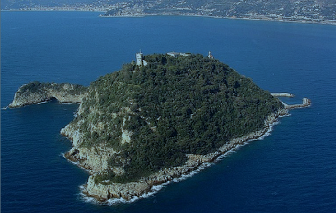
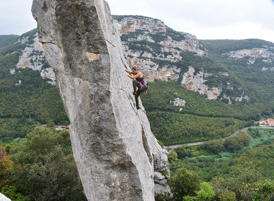
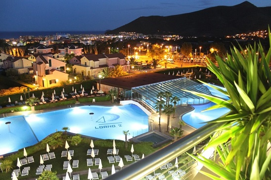
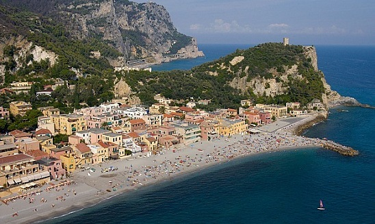
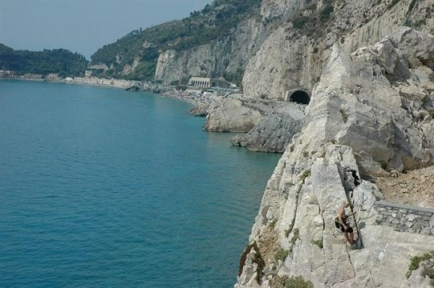

Welcome to ASIC 2018
The Seventeenth Annual Summer Interdisciplinary Conference, held at Loano2 Village near Loano on the Italian Riviera, on each of six consecutive days, June 17–22, 2018.

Gallinara Island near Loano
The dates were chosen to reduce possible conflicts with the Cognitive Science Society meetings held July 25–28 in Madison, Wisconsin, and the Mathematical Psychology Meetings held in Madison just prior to those days.
Loano2 Village (loano2village.it/en) is highly rated and has excellent facilities and food. The meetings, catered breaks, and buffet breakfasts and dinners are held in the resort.

Typical rock climbing near Final Ligure, not far from Loano, Italy
Loano2 Village is just a few kilometers inland and uphill from many white sand beaches. There are many water activities available in the area. Mountains rise from the beaches to about 3,000–4,000 feet all along the Italian Riviera, offering convenient access to hiking, rock climbing, biking and mountain biking, and canyoning. There are also many attractive villages and towns along the coast.

Pools at Loano2 Village
Travel to the resort is quite easy, by bus, train, and auto. There are nearby airports at Genoa (80 km), Nice (110 km) and Turin (160 km), but most international attendees will find it most convenient to fly to Milan (200 km), about 2.25 hours distant by auto. By auto from Loano2 Village it does not take long (up to 90 minutes) to reach the eastern Italian Riviera (e.g. Portofino) or the French Riviera (e.g. Nice or Monaco–Montecarlo).

Typical beach on the Italian Riviera — Varigotti
Richard M. Shiffrin of Indiana University – Bloomington is the organizer. Email correspondence should be directed to shiffrin@indiana.edu (see the Contact tab for all contact info).
About the conference
The subject matter of the ASIC conferences is interdisciplinary, but with a primary emphasis upon a wide variety of scientific domains within the broad frame of Cognitive Science. ASIC uses the very successful format of previous ASIC and AIC conferences: days are free for leisure activities and discussions among participants. The talks are in the later afternoon/early evening, followed by dinner. The dates have been chosen to make it convenient for attendees to bring family and friends.
Invitation
The conference is open to all interested parties, and their family and friends. An invitation is NOT needed to attend. However, due to the small number of spots for speakers, the organizer will select the attendees to give talks, and choose the lengths of talks. We encourage you to send the conference information to friends and colleagues.
Conference aims
The conference covers a wide range of subjects, with a particular but not exclusive focus on topics in cognitive science, including:
- modeling of cognition
- neuroscience, cognitive neuroscience
- psychology (including perception, psychophysics, attention, information processing, memory and cognition)
- computer science and artificial intelligence
- machine intelligence and learning
- methodology and statistics
- linguistics, psycholinguistics and computational linguistics
- philosophy of mind, cognitive science
We especially invite talks emphasizing theory, mathematical modeling, and computational modeling (including neural networks and artificial intelligence). Nonetheless, we require talks that are comprehensible and interesting to a wide scientific audience.
Conference format
There is a single speaking session each day (no posters), intentionally organized to maximize the dissimilarity of each day's presentations. If the number of participants exceeds the number of speaking slots (about 42), the organizer will select some talks to be of shorter duration, and if necessary choose the speakers who will have the opportunity to present.
For a listing of other ASIC sites, see the previous ASIC sites page.
Talks & Submissions
Whether or not you have already sent some of this information to the organizer by email, please provide authors, affiliations, emails, a title, and an abstract.
Please provide a list of authors (with the presenter indicated), their affiliations, and emails; a title; and an abstract (limit 250 words). These may be changed later, so do not hesitate to send them as early as possible. The organizer uses these to plan the conference and organize the sessions.
If attendance allows regular length talks, these are limited to 30 minutes, a time that includes interruptions for questions and final discussion — plan for about 20–24 minutes of actual speaking. Talks should be aimed not at specialists but at a general scientific audience.
There is room on the program for about 42 30-minute talks. If more than 42 attendees want to present, the organizer will either choose some talks to be of shorter duration, or in extremity, decide which attendees will give presentations. When registering, please indicate if you might be willing to (1) give a shorter talk, or (2) forego giving a talk.
To add or edit this information on the website you need a code — the same code used to make lodging reservations, obtainable by emailing the organizer at shiffrin@indiana.edu. Contact reberle@indiana.edu with questions about the submission system.
Authors, titles, and abstracts must be posted at least two weeks before the conference; the presentation slides must be posted by the conference start.
Registration
You are not officially on the request list for presenting research until you register and send the registration fee.
If you have a 5% or greater chance of attending ASIC 2018, list yourself on the "Potential Attendees" page. Once reasonably sure of attending, fill out the registration form and submit your registration fee, which pays for rental of the conference room, conference equipment rentals, catering costs for snacks and drinks at conference breaks and receptions, and several other miscellaneous costs.
Fee schedule (US dollars)
| Timing | To Indiana Conference Bureau |
|---|---|
| Prior to January 1, 2018 | $300 |
| January 1 – March 1, 2018 | $360 |
| After March 1, 2018 | $420 |
In addition to the registration fee per person, you may purchase guest vouchers for other persons attending receptions, breaks, and dinners. The fee for guest attendance at breaks only is $15 per day (paid to the Indiana Conference Bureau). The fee for each person not at the hotel who wishes to join the buffet dinner is 35 or 40 euros depending on the day, and 25 euros for children staying elsewhere — paid directly to the hotel.
Lodging
A block of rooms is held at Loano2 Village, an excellent hotel with good restaurants on the western Italian Riviera.
Hotel website: loano2village.it. Lodging rates below include breakfast and dinner. Reservations should be made early, starting in fall 2017.
Rates (per person, per day, "junior rooms")
| One person | 110 Euro/day |
|---|---|
| Two persons in one room | 160 Euro/day |
Three or four people are lodged in "family classic rooms": each adult is charged 90 Euro/day; children 2–11 are charged 36 Euro/day; children 12–16 are charged 54 Euro/day.
Conference rooms
The hotel has about four or five well-equipped conference rooms of various sizes, and will provide one sufficient for our needs (seats at tables, and space for refreshments and food at breaks).
Parking & internet
There is free and ample parking, and free internet throughout.
Reservations
To obtain the conference rate, email the organizer to obtain the conference code. Reservations can be made by email or telephone: Telephone +39 019.67911 · Email info@loano2village.it.
Location
Loano2 Village is on the western Italian Riviera, about 1.3 km from the center of Loano and about 1.5 km from the railway station (where there are taxis). Most attendees will probably drive; driving directions are on the hotel website. The nearest airports are Genoa (~80 km) and Côte d'Azur (~125 km); many international attendees will use Milan (~250 km, about 2.5 hours driving).
Beaches & pools
The hotel has large and attractive pools. There are also a variety of white sand beaches starting about ten minutes from the hotel. A few beaches are public but most (and the closest) are private and require a daily fee; the hotel has a shuttle to the closest beaches.
Meals, Dining & Breaks
A generous breakfast buffet is included in the daily lodging price.
Breakfast is available from 7:30–10:00 daily. Multi-course buffet dinners with vegetarian and vegan choices are available in the hotel restaurants when the sessions end, starting about 20:15–20:30.
Daily schedule
Each day the conference begins with a reception with refreshments and light food near or in the conference room, starting at about 15:30–15:45. Talks run from about 16:00 to 20:00, followed by group dinner at the hotel.
Travel
Travel to Loano2 Village is quite easy, by bus, train, and auto.
There are nearby airports at Genoa (80 km), Nice (110 km) and Turin (160 km), but most international attendees will find it most convenient to fly to Milan (200 km), about 2.25 hours distant by auto. Trains to Loano are available from the major airports, and various bus services are also available; see the hotel website for details.
There is ample parking at Loano2 Village. Once at the Village, many sites on the Italian Riviera are easy to reach — for example, by auto it takes about 90 minutes to reach the eastern Italian Riviera (e.g. Portofino) or the French Riviera (e.g. Nice or Monaco–Montecarlo). There are many attractive villages and towns all along the coast.
Activities
There are numerous activities close to Loano2 Village, and easily reached along the Italian Riviera.

Activities include many water and beach activities, rock climbing both along the coast and at two very large sites with thousands of equipped routes (Finale Ligure and Val Pennavaire), road and mountain biking, canyoning, hiking and trekking, and much more.
Contact
Email is preferred for all correspondence.
Conference organizer
Rich Shiffrin
Indiana University – Bloomington
shiffrin@indiana.edu
Tel: 812-855-4972 · Fax: 812-855-9871
Webmaster / Conference Coordinator
Ruth Eberle
Phone: (812) 856-5722
reberle@indiana.edu
Postal address
Annual Summer Interdisciplinary Conference (ASIC 2018)
c/o Prof. Richard Shiffrin, Psychological and Brain Sciences Department
Indiana University, 1101 E. 10th St., Bloomington, IN 47405